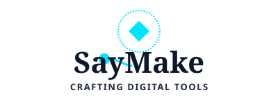

거창한 목표 대신 지금 당장 할 수 있는 2분짜리 행동부터 시작하세요.
분명하고, 매력적이고, 쉽고, 만족스러운 습관 루프 시스템으로 매일의 성장을 기록합니다.
의지력에 기대지 않고 환경과 시스템으로 습관을 만듭니다.
"기존 습관을 한 후에 새 습관을 한다" 공식으로 자연스러운 행동 트리거를 설계합니다.
시작의 마찰을 없애기 위해 어떤 습관이든 처음 2분만 가볍게 집중할 수 있도록 돕습니다.
'절대 두 번은 거르지 않는다'는 원칙으로 스트릭(Streak)을 유지하고 성취감을 시각화합니다.
작은 실천이 쌓여 만드는 복리 성장 곡선과 히트맵으로 나의 변화를 한눈에 확인하세요.
1% 습관 로그에 대한 문의나 기능 제안이 있으시다면 언제든 연락해 주세요.
saymake.official@gmail.com
영업일 기준 24시간 이내에 답변해 드립니다.
